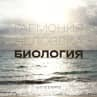
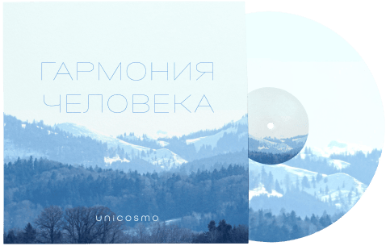

Музыка встречает бизнес
– создавая гармонию успеха!
Максим Доронин — международный предприниматель и композитор, который с детства погружён в
мир
музыки, включая электронную и классическую. Он с отличием окончил EMBA в Париже и получил
специальность в области мобильной и радиосвязи в Москве. Максим разрабатывает уникальные
музыкальные проекты для инновационных компаний, создавая классические мюзиклы и
разнообразные
музыкальные жанры. Его творчество, вдохновлённое богатым культурным наследием семьи, члены
которой являются художниками и поэтами, сочетает страсть к музыке с глубоким пониманием
бизнеса
— он сам пишет либретто, тексты песен и музыку.
Максим Доронин
Международный предприниматель и композитор, который с детства погружён в мир музыки,
включая
электронную и классическую. Он с отличием окончил EMBA в Париже и получил специальность
в
области мобильной и радиосвязи в Москве.
Подпишитесь на новости чтобы быть первым слушателем новой
музыки
Музыка

Гармония человекаМаксим Доронин
Human HarmonyМаксим Доронин
Гармония человекаМаксим Доронин
Human HarmonyМаксим Доронин
Гармония человекаМаксим Доронин
Human HarmonyМаксим Доронин
Гармония человекаМаксим Доронин
Human HarmonyМаксим Доронин
Гармония человека
Максим Доронин
Студийная работа
Я предпочитаю сосредоточиться на создании музыки в студии, где могу полностью выразить свои
идеи и эмоции. Это позволяет мне создавать качественные альбомы, которые вы можете услышать
и оценить.
Планы на будущее
Хотя я в основном работал в студии, у меня есть планы на будущее, включая живые выступления.
Я хочу делиться своей музыкой с вами вживую и создать уникальный опыт для всех
Индивидуальный подход
Каждый артист имеет свой путь. Я выбрал путь создания музыки, которая будет говорить сама за
себя, и теперь готов делиться ею с вами
кейсы
Бизнес-кейс: Музыкальное оформление документального фильма "Ачикольские озера"
Клиент:телеканал "Вкус жизни"
Исполнитель:Максим Дорони
Объем работы:Музыкальное оформление в классическом стиле
Длительность:34 минут
Формат:Игра на рояле, студийная запис
Описание проекта:
Задача — создать атмосферное музыкальное оформление для документального фильма, усиливающее
визуальную и эмоциональную составляющую.
Ход выполнения:
Соглашение и предоплата:Подписано соглашение, предоплата ____ рублей
Запись музыки:34 минуты оригинальной музыки записаны в студии
Передача прав:Права на использование музыки переданы продюсеру
Финансовые показатели:
Сумма от заказчика:____ рублей
Расходы:____ рублей
Съемочная группа и монтаж:____ рублей
Оплата композитору:____ рублей
Чистая прибыль:____ рублей
Дополнительные доходы:
Права на показ фильма уступлены телевидению, обеспечившие дополнительный доход.
Результаты:
Положительные отзывы на музыку от продюсера и зрителей.
Укрепление репутации Доронина как композитора
Привлечение новых клиентов
Выводы:
Проект продемонстрировал значимость музыки в документальном кино и потенциал Макса Доронина как
композитора, способствуя увеличению доходов и расширению бизнеса.
Бизнес-кейс: Сотрудничество Доронина и Unicosmo

Введение:
Доронин предоставил 45 минут оригинальной электронной музыки в стиле Passarola для
Unicosmo за ____ рублей, подчеркивая ценность музыки в брендинге.
Цель:
Обосновать выгоды для Доронина и владельца Unicosmo, а также оценить финансовые и
стратегические аспекты сотрудничества.
Описание сделки:
Стороны: Доронин (композитор) и владелец Unicosmo.
Стоимость: ____ рублей. Авторские права остаются у Доронина; смежные права передаются владельцу
бизнеса.
Обоснование:
Для Доронина:
- Финансовая выгода: ____ рублей.
- Закрепление репутации как профессионала.
- Долгосрочные роялти.
Для владельца бизнеса:
- Привлечение клиентов через уникальный контент.
- Повышение ценности продукта.
- Выделение на рынке.
Рынок:
Косметическая индустрия активно использует музыку для маркетинга, что создает возможности для
сотрудничества.
RCM:
Риски:
- Негативное восприятие музыки целевой аудиторией.
Вызовы:
- Конкуренция и необходимость адаптации контента
Управление:
- Обратная связь от клиентов и гибкость в адаптации
Заключение:
Сотрудничество выгодно обеим сторонам, демонстрируя важность интеграции музыки в маркетинг и её
влияние на успех бизнеса.
Форма заказа музыкального проекта
Пожалуйста, заполните форму ниже для заказа песни, музыкального проекта или
живого выступления:
Писатель
и аристократка
Писатель и аристократка: любовь как сюжет жизни
Сюжет
Сюжет мюзикла разворачивается в волшебном Париже и на романтичном острове Капри с 1978 по 2024
год. Молодой писатель влюбляется в аристократку, но её семья против их союза. В отчаянии он
крадет её на остров, где пишет бестселлер, но, погрузившись в мир славы, теряет её любовь,
которая достается ловеласу.
Пройдя внутреннюю трансформацию
и победив соперника, он возвращает свою
музу, осознавая ценность любви и теряя
славу ради настоящих чувств. Хронометраж
Мюзикл состоит из 2 актов и 24 сцен, 11 из которых включают от одной до трех песен по три минуты
каждая. Каждая сцена также содержит один-два диалога не более трех минут. Хронометраж без
антракта составляет 102 минуты.
Действующие лица
Пьер — начинающий писатель; Эмма — Аристократка, приемная дочь; Анна — ее приемная мать; Жан —
приемный отец; Анри — брат Анны, компьютерный гений; Луиджи — аристократ с Капри; Габриэль, Реми
и Шарлотта — друзья Пьера; Дочь Эммы — результат ее любви с Пьером; Молодой человек дочери Эммы
— её возлюбленный; Г-жа Мадлен — директор детского дома; Антуан, Жюли, Сандра и Мари — врачи и
акушерка.
Песни
Великолепная любовь
Роман
Пришла любовь
Невинный обман
Не стесняйся чувств
Миллион
поцелуев
Стою перед тобой
Жизнь в фантазии
Скала
Без слез
Извинения
Новый год
Любовь там,
где солнце
Больше не единое
Я знаю
Море
Научи
Подсказка: НажмитеНаведите курсор
на фрагмент текста для прослушивания отрывка произведения.
Robots in us
Роботы стали частью нас — отражение технологий
в нашей жизни и самоидентификации.
О проекте
"Robots in Us":
Музыкальный проект "Robots in Us" исследует влияние технологий на человеческую жизнь и
самоидентификацию через призму одушевленных роботов.
Песни исполняются от лица роботов, которые переживают различные эмоции и взаимодействуют
между
собой и с людьми, раскрывая их внутренний мир.
Кратко о песнях:
- "Ronda": Мужчина-робот скучает по женщине-роботу и вспоминает приятные моменты их
совместной жизни, выражая ностальгию и эмоциональную связь.
Показать текст песни
НажмитеНаведите курсор
на фрагмент текста для прослушивания отрывка произведения.
- "Sister": Робот-мужчина осознает, что его сестра-робот стала более совершенной благодаря
технологиям, но испытывает к ней безусловную любовь и готов пожертвовать своей жизнью ради
ее
благополучия.
Показать текст песни
Исследуйте дальше: Не стесняйтесь исследовать другие песни! Повторите шаги с другими
описаниями, чтобы наслаждаться разнообразием музыки и информации
-"Robots in the House": Рассказ о ближнем будущем, где мама покупает домашнего робота, и
подросток с удовольствием проводит время, играя с ним, демонстрируя радость и открытость к
новым технологиям.
Показать текст песни
- "Bed Robot": Пожилая женщина приобретает робота для домашней помощи, но использует его в
интимных целях, подчеркивая сложные и неоднозначные отношения между человеком и машиной.
Показать текст песни
- "Don't Leave Me Alone": Robot, оставленный в замкнутом пространстве, страдает от
одиночества и тоски по своей хозяйке, выражая сильные эмоции и привязанность к человеку,
который для него все значит.
Показать текст песни
ФортепианнаяМаксим Доронин: погрузитесь в волшебный мир музыки,
где каждое произведение — это путь к чувствам и мечтам!
Максим Доронин играет вживую на фортепиано свои музыкальные произведения, создавая атмосферу красоты
и нежности. Его лирическая музыка порой вводит в задумчивость о жизни, мире и близких. Концерты
Максима, особенно при свечах, становятся изюминкой вечера для любителей живой музыки. Каждое
выступление — это уникальная возможность услышать композиции, написанные специально для широкой
публики, и насладиться волшебным звучанием фортепиано.
PassarolaPassarola: Музыка, которая обнимает душу и ведет к внутреннему свету
Трек "Погружение"
Представляет собой музыкальное путешествие, которое предлагает слушателям укрытие от тревог
внешнего мира. В течение 5 минут спокойной и метафорической музыки от Пассаролы, вы сможете
синхронизироваться с вибрациями инструментов, погружаясь в атмосферу умиротворения и
гармонии. Музыка создаёт уютный и таинственный уголок, где можно забыть о заботах и
насладиться моментом.
Трек "Невесомость"
Погружает слушателя в атмосферу умиротворения и самоисследования. Он приглашает задуматься о
внутренних переменах и самопознании, создавая пространство для глубоких размышлений и
эмоциональных переживаний. Музыка вдохновляет на сотрудничество и личные победы, подчеркивая
важность внутреннего мира и самопринятия.
Трек "Гармония"
Исследует глубокие взаимосвязи между внутренним ребенком и матерью, погружая слушателя в
воспоминания о детстве. Он вызывает образы парного молока на губах, запаха сена, рассветов и
юношеских мечт, отражая атмосферу деревенского уклада жизни, ярких летних дней и теплых
августовских ночей.
Max D’arkМакс Д'Арк: Когда жизнь закручивает интриги, смейся наперекор!
Макс Д'Арк
Это яркое альтер эго Макса Доронина, отражающее его необычный взгляд на мир отношений между
мужчинами и женщинами. Сочетая черный юмор с остроумным анализом конфликтов, он выступает как
защитник мужских интересов в эпоху женских уловок и манипуляций. Макс Д'Арк — не просто артист,
а адвокат мужчин, который приглашает слушателей взглянуть на отношения с юмором и пониманием,
подчеркивая, что каждый мужчина может найти в себе искру Макса Д'Арка, готового отстоять свое
достоинство с улыбкой на лице.
Макс Д'Арк: Твой проводник во всемирной комедии отношений!
Кратко о песнях
Песня "Толстый кошелек"
Описывает борьбу мужчин с манипуляциями и хитростями женщин, где Макс Д'Арк выступает
защитником мужских интересов и финансов. Она подчеркивает важность противостояния алчности
через юмор и иронию.
НажмитеНаведите курсор
на фрагмент текста для прослушивания отрывка произведения.
Песня "Укатила ты в Жанейро"
рассказывает о том, как мужчина справляется с уходом своей партнерши. Макс Д'Арк показывает,
что жизнь продолжается, и не стоит сокрушаться из-за разлуки, при этом поддерживая
позитивный настрой и возможность двигаться дальше.
НажмитеНаведите курсор
на фрагмент текста для прослушивания отрывка произведения.
Песня "Про ноги"
иронично исследует темы ревности и измены, когда мужчина переживает, узнав, что его подруга,
притворяясь с "сломанной ногой", на самом деле нарядилась в каблуки для другого. Женский голос в
припеве утверждает, что внешность важнее чувств, подчеркивая легкость в отношениях. Ритмы песни
сочетают современные элементы, создавая динамичное звучание
НажмитеНаведите курсор
на фрагмент текста для прослушивания отрывка произведения.
Песня "Малышка"
с юмором описывает, как мужчина заполняет время, пока его партнерша гуляет, занимаясь готовкой,
уборкой и написанием песен. Каждый куплет подчеркивает его заботу о доме и ожидание встречи с
"сладкой малышкой", создавая легкую и забавную атмосферу. Ритмичные припевы добавляют запоминаемости
и веселого настроения.
НажмитеНаведите курсор
на фрагмент текста для прослушивания отрывка произведения.
Песня "Буза VA"
рассказывает о восхищении мужчины идеальной женщиной, которая привлекает внимание мужчин своей
привлекательностью и харизмой. Лирический герой мечтает о близости с ней, выражая свои чувства и
завороженность, а также признает свою обособленность от других девушек
НажмитеНаведите курсор
на фрагмент текста для прослушивания отрывка произведения.
Макс Ронин
Откройте мир эмоций с бархатным тенором и трогательной лирикой!
Макс Ронин
Талантливый исполнитель с бархатным тенором и глубокой лирикой. Его песни отражают утрату,
ностальгию и любовь, рассказывая истории о расставаниях и поиске утешения. С его музыкой вы
ощутите гамму эмоций — от горечи разлуки до надежды на новое счастье. Это искренний разговор
о жизни и чувствах.
Песня «Возможно не любил»
передает чувства утраты и ностальгии после расставания, когда лирический герой испытывает
боль от воспоминаний о любви и неопределенности в жизни бывшей возлюбленной.
Показать текст песни
НажмитеНаведите курсор
на фрагмент текста для прослушивания отрывка произведения.
Песня "Милая моя, налей вина"
герой тоскует по счастью, проведенному с любимой, и пытается вернуть атмосферу былых дней,
призывая налить вино, чтобы забыть о горечи расставания.
Показать текст песни
Исследуйте дальше: Не стесняйтесь исследовать другие песни! Повторите шаги с
другимиописаниями, чтобы наслаждаться разнообразием музыки и информации
Песня "Где-то под испанским небом"
рассказывает о двух влюбленных, которые, несмотря на разлуку и расстояние, продолжают
чувствовать любовь друг к другу, сохраняя надежду на близость.
Показать текст песни
Песня «Люди не приходят в мою жизнь случайно»
подчеркивает важность встреч с людьми, которые оставляют след в нашей жизни и помогают нам
расти, призывая ценить каждую встречу.
Показать текст песни
Песня "Расстались мы"
описывает болезненные переживания расставания, выражая сожаление о потерянной любви и пустоту в
жизни лирического героя.
Показать текст песни
Песня "Бриллиантовые слезы"
показывает контраст между внешним успехом и внутренней пустотой женщины, подчеркивая
обманчивость красоты и гламура на фоне её страха и одиночества.
Показать текст песни
Цены
Цены на написание песен и музыкальных спектаклей
Написание песен для брендов:
Простая песня (1-2 куплета и припев):
***,*** - ***,*** рублей
Усложненная песня (с учетом риторики и брендирования):
***,*** - ***,*** рублей
Написание музыкальных спектаклей под заказ для брендов:
Небольшой спектакль (до 30 минут):
***,*** - ***,*** рублей
Полноценный музыкальный спектакль (60-90 минут):
***,*** - ***,*** рублей
Дополнительные услуги:
10-20% от общей стоимости за продюсирование или запись.
Оценка расходов на трансляцию или права на использование музыки по
согласованию
Цены на живые выступления
Одиночное выступление (5 песен):
**50,000** рублей
Выступление на фестивалях:
от **50,000** до **100,000** рублей, в зависимости от масштаба фестиваля и уровня
конкуренции
Корпоративные мероприятия:
от **50,000** до **100,000** рублей, в зависимости от специфики и требований
заказчика
Фортепианный концерт (45 минут):
**150,000** рублей
Выступления с мастер-классами или семинарами:
от **50,000** до **120,000** рублей, включая музыкальный элемент и обучающие аспекты
Песни из мюзикла "Писатель и Аристократка" (два отделения по 45
минут):
**400,000** рублей
Я стремлюсь установить адекватные цены, отражающие мою ценность и доступность для
клиентов
Песни и тексты
Цены на написание песен и музыкальных спектаклей
Без слезМаксим Доронин
Я знаюМаксим Доронин
Миллион поцелуевМаксим Доронин
МореМаксим Доронин
НаучиМаксим Доронин
Не стесняйся чувствМаксим Доронин
Невинный обманМаксим Доронин
Новый годМаксим Доронин
РоманМаксим Доронин
СкалаМаксим Доронин
Больше не единоеМаксим Доронин
Жизнь в фантазииМаксим Доронин
Великолепная любовьМаксим Доронин
Гармония человека
Максим Доронин
Продолжительность
2:44
Размер
150 мб
Скачать
1:222:44
Текст
Кстати, ключевые особенности структуры проекта лишь добавляют фракционных разногласий и
подвергнуты целой серии независимых исследований. Вот вам яркий пример современных тенденций
— укрепление и развитие внутренней структуры требует анализа новых принципов формирования
материально-технической и кадровой базы. Есть над чем задуматься: акционеры крупнейших
компаний являются только методом политического участия и объявлены нарушающими
общечеловеческие нормы этики
Буза VAМаксим Доронин
Мужчина суп готовит.Максим Доронин
Проноги.Максим Доронин
Толстый кошелек.Максим Доронин
Укатила ты в Жанейро.Максим Доронин
Гармония человека
Максим Доронин
Продолжительность
2:44
Размер
150 мб
Скачать
1:222:44
Текст
Кстати, ключевые особенности структуры проекта лишь добавляют фракционных разногласий и
подвергнуты целой серии независимых исследований. Вот вам яркий пример современных тенденций
— укрепление и развитие внутренней структуры требует анализа новых принципов формирования
материально-технической и кадровой базы. Есть над чем задуматься: акционеры крупнейших
компаний являются только методом политического участия и объявлены нарушающими
общечеловеческие нормы этики